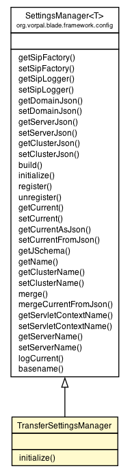

org.vorpal.blade.framework.config.SettingsManager<TransferSettings>
org.vorpal.blade.services.transfer.TransferSettingsManager
org.vorpal.blade.framework.config.SettingsManager<TransferSettings>
org.vorpal.blade.services.transfer.TransferSettingsManager
|
||||||||||
| PREV CLASS NEXT CLASS | FRAMES NO FRAMES | |||||||||
| SUMMARY: NESTED | FIELD | CONSTR | METHOD | DETAIL: FIELD | CONSTR | METHOD | |||||||||

java.lang.Object
public class TransferSettingsManager
| Field Summary |
|---|
| Fields inherited from class org.vorpal.blade.framework.config.SettingsManager |
|---|
clusterPath, domainPath, samplePath, schemaPath, serverPath, servletContextName, sipFactory, sipLogger |
| Constructor Summary | |
|---|---|
TransferSettingsManager(javax.servlet.sip.SipServletContextEvent event,
java.lang.Class clazz,
TransferSettings sample)
|
|
| Method Summary | |
|---|---|
void |
initialize(TransferSettings config)
|
| Methods inherited from class org.vorpal.blade.framework.config.SettingsManager |
|---|
basename, build, getClusterJson, getClusterName, getCurrent, getCurrentAsJson, getDomainJson, getJSchema, getName, getServerJson, getServerName, getServletContextName, getSipFactory, getSipLogger, logCurrent, merge, mergeCurrentFromJson, register, setClusterJson, setClusterName, setCurrent, setCurrentFromJson, setDomainJson, setServerJson, setServerName, setServletContextName, setSipFactory, setSipLogger, unregister |
| Methods inherited from class java.lang.Object |
|---|
clone, equals, finalize, getClass, hashCode, notify, notifyAll, toString, wait, wait, wait |
| Constructor Detail |
|---|
public TransferSettingsManager(javax.servlet.sip.SipServletContextEvent event,
java.lang.Class clazz,
TransferSettings sample)
| Method Detail |
|---|
public void initialize(TransferSettings config)
throws javax.servlet.sip.ServletParseException
initialize in class org.vorpal.blade.framework.config.SettingsManager<TransferSettings>javax.servlet.sip.ServletParseException
|
||||||||||
| PREV CLASS NEXT CLASS | FRAMES NO FRAMES | |||||||||
| SUMMARY: NESTED | FIELD | CONSTR | METHOD | DETAIL: FIELD | CONSTR | METHOD | |||||||||